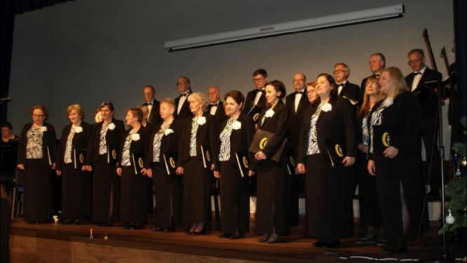
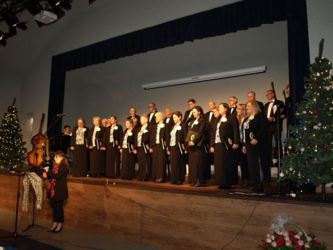
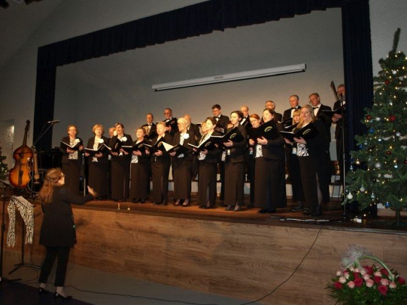
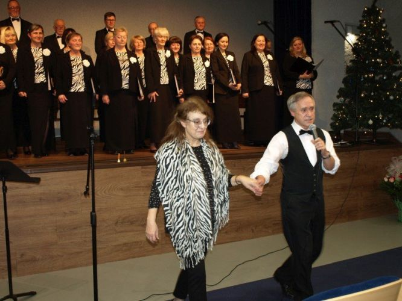
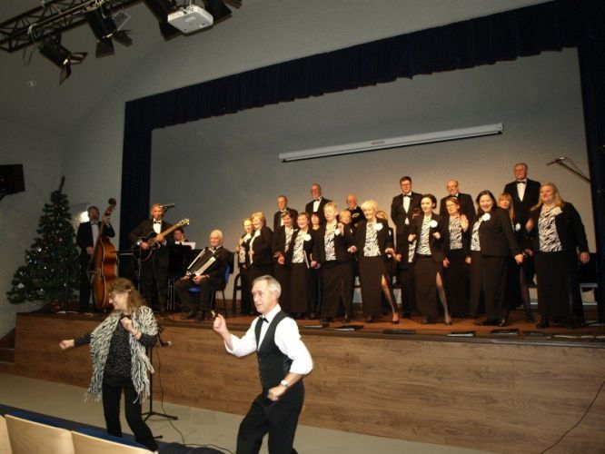
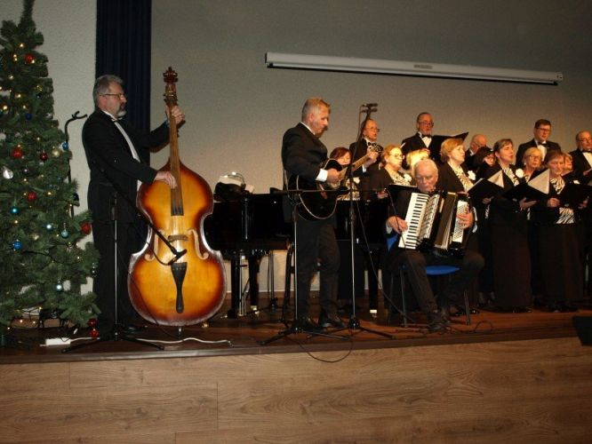
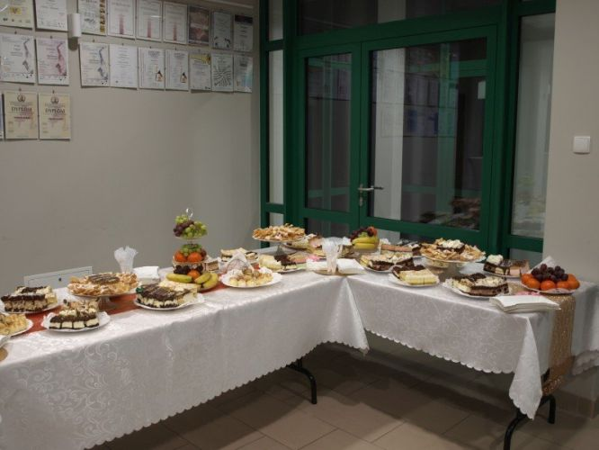

A tymczasem w Cameracie...
.
2023-01-29
Niedziela, 29 stycznia 2023 r. była dla Cameraty dniem niezwykle pracowitym i pełnym wrażeń.O godz. 12.00 chór pod dyr. Izabeli Szoty zapewnił oprawę muzyczną Mszy Św. w Sanktuarium Św. Józefa w Krakowie (Rynek Podgórski), a po Mszy wykonał krótki koncert kolęd.
Następnie zespół udał się do Koszyc na zaproszenie Burmistrza Gminy Koszyce.

Tam w Sali Koncertowej wykonał Koncert Noworoczny, który składał się z dwóch części.Pierwsza stanowiła opowieść o narodzeniu Jezusa przedstawioną słowem i pieśnią. Kolędy i pastorałki doskonale korespondowały ze słowami Ewangelii wg Św. Łukasza, wygłoszonymi przez Marka Turchana oraz tekstami Jana Kochanowskiego, Jana Kasprowicza czy Kajetana Kraszewskiego w interpretacji Izabeli Szoty.

Druga część, utrzymana w tanecznych rytmach, nawiązywała do karnawału. Zespół zaśpiewał utwory w rytmach poloneza, krakowiaka, kujawiaka, walca, bolero, tango (z tekstem Ewy Roeske-Tracz), cha-cha i polki.

Nie zabrakło także pląsów z publicznością, które poprowadził Kazimierz Nowak.
 
Chórowi towarzyszyła na fortepianie Agnieszka Korczyńska, a do ostatnich utworów dołączył także zespół instrumentalny utworzony przez naszych Panów: Andrzeja Kłyszewskiego (akordeon), Jana Thomasa (gitara) i Marka Turchana (kontrabas).

Zwieńczeniem Koncertu Noworocznego był poczęstunek przygotowany przez Stowarzyszenie Towarzystwo Przyjaciół Przemykowa.

Tekst Izabela Szota

© Stowarzyszenie Muzyczne Chór Camerata Wieliczka